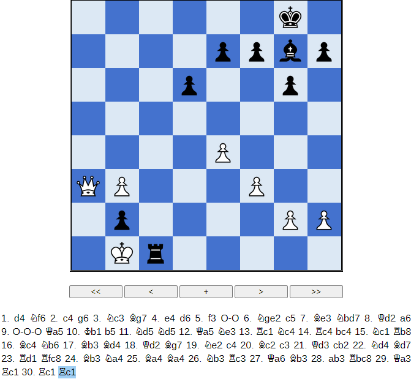
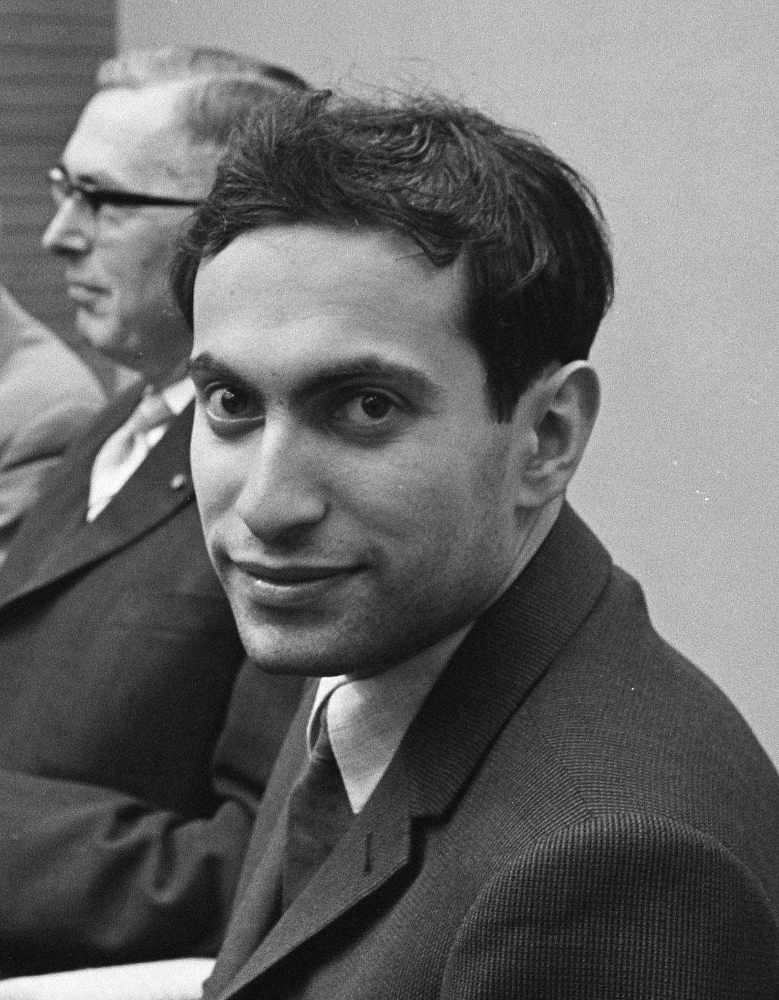

Bobotsov, Milko (Blancas) - Tahl, Mikhail (Negras)
Con sacrificio de dama (1958)
Cuando uno quiere escribir sobre Mikhail Tahl sabe que se enfrenta a un tarea complicada. ¿Qué decir que no se haya dicho ya?, un jugador que ha acaparado todos los elogios, tanto por su juego lleno de genialidades como por su atrayente personalidad.
Esta partida sobrepasa cualquier elogio que se pueda hacer. Sacrificar la dama en la jugada 11, con las blancas al menos tan bien desarrolladas como las negras, es un gran riesgo. Pero después de unas jugadas las negras son más activas y las blancas se encuentran sin piezas para defender a su rey. Bobotsov jugó la apertura con agresividad y Tahl aceptó el reto, jugar así contra un mago puede ser una temeridad... y más cuando hay enroques opuestos, entonces la partida se convierte en una carrera de peones que percuten contra el enroque rival, y en esa carrera Tahl logró gran ventaja. Misha movió con maestría sus soldados, que aunque estaban en inferioridad numérica lograron una gran victoria.
Esta partida es muy representativa del estilo de Tahl. Esto no es sólo ajedrez, entran en juego ciertos aspectos externos, como un poco de psicología y el temor que inspiraba a sus rivales con su sola presencia. Además sacar a ciertos jugadores de los caminos conocidos suele desconcertarles, las posiciones complicadas no son para todos y en ellas Tahl era un auténtico maestro. Hay que recordar a jugadores pioneros que utilizaron la psicología en el ajedrez, como el campeón del mundo Emanuel Lasker o el recientemente fallecido Vassily Smyslov.
Yo estoy de acuerdo con la visión de los que creen que en una partida de ajedrez hay algo más que seguir unas líneas preestablecidas. No somos máquinas, somos seres humanos, con nuestras debilidades y nuestro miedos. Todo eso puede afectar en una partida de ajedrez: los nervios, el cansancio, el temor al rival, etc. El que controle todos estos factores externos tendrá mucho ganado. Realmente no creo en los jugadores dogmáticos, aquellos que limitan la forma de jugar a unas normas que ellos consideran correctas... me parece demasiado simplista y más en un juego tan profundo como el ajedrez, donde las posibilidades son casi infinitas y donde existen distintas maneras de jugar que se adecuan a la personalidad de cada ajedrecista.
Enlace al visor de la partida
|  |

|